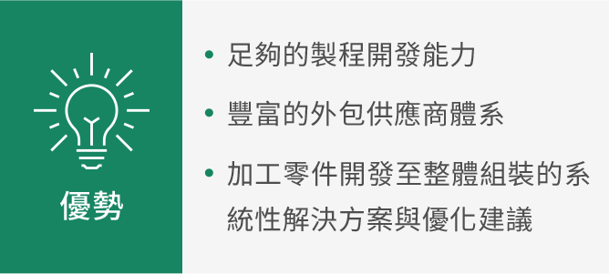

榮炭服務
本公司提供客戶完整的工程諮詢解決方案；以台灣各汽車廠底盤與煞車零組件之穩健基礎，拓展至國際知名客戶；強項為金屬產品相關之精密機械加工業務，服務國內外知名汽車與農工業用機械廠商，屬第一階的零組件供應商，並有足夠能力承接客戶之產品設計規劃及提供系統性加工建議，提供客戶由設計研發到物流配送的一站式服務。
|
|
銷售據點
榮炭經過多年的市場開發及累積，銷售據點拓展至世界各地。
本公司提供客戶完整的工程諮詢解決方案；以台灣各汽車廠底盤與煞車零組件之穩健基礎，拓展至國際知名客戶；強項為金屬產品相關之精密機械加工業務，服務國內外知名汽車與農工業用機械廠商，屬第一階的零組件供應商，並有足夠能力承接客戶之產品設計規劃及提供系統性加工建議，提供客戶由設計研發到物流配送的一站式服務。
|  |
|
|
|
銷售據點
榮炭經過多年的市場開發及累積，銷售據點拓展至世界各地。
Atrans Services
Our company provides customers with complete engineering consulting solutions. Building on a solid foundation of chassis and brake components for various car manufacturers in Taiwan, we have expanded to serve internationally renowned clients. Our strength lies in precision machining for metal products, serving well-known automotive and agricultural/industrial machinery manufacturers both domestically and internationally. As a Tier 1 component supplier, we are fully capable of undertaking product design planning for clients, providing systematic processing recommendations, and offering one-stop services from design and R&D to logistics and delivery.
|
|
Sales Network
Through years of market development and accumulation, Atrans has expanded its sales network to various parts of the world.
Our company provides customers with complete engineering consulting solutions. Building on a solid foundation of chassis and brake components for various car manufacturers in Taiwan, we have expanded to serve internationally renowned clients. Our strength lies in precision machining for metal products, serving well-known automotive and agricultural/industrial machinery manufacturers both domestically and internationally. As a Tier 1 component supplier, we are fully capable of undertaking product design planning for clients, providing systematic processing recommendations, and offering one-stop services from design and R&D to logistics and delivery.
|
|
|
Sales Network
Through years of market development and accumulation, Atrans has expanded its sales network to various parts of the world.
榮炭のサービス
当社は、お客様に完全なエンジニアリングコンサルティングソリューションを提供しています。台湾の各自動車メーカー向けのシャシーおよびブレーキ部品における確固たる基盤を活かし、国際的に著名な顧客へと事業を拡大しています。強みは金属製品関連の精密機械加工業務であり、国内外の著名な自動車および農工業用機械メーカーにサービスを提供しています。当社はティア1の部品サプライヤーであり、お客様の製品設計企画を請け負い、体系的な加工提案を行う十分な能力を有し、設計開発から物流配送までワンストップサービスを提供しています。
|
|
販売拠点
長年の市場開拓と経験の蓄積を経て、榮炭の販売拠点は世界各地に広がっています。
当社は、お客様に完全なエンジニアリングコンサルティングソリューションを提供しています。台湾の各自動車メーカー向けのシャシーおよびブレーキ部品における確固たる基盤を活かし、国際的に著名な顧客へと事業を拡大しています。強みは金属製品関連の精密機械加工業務であり、国内外の著名な自動車および農工業用機械メーカーにサービスを提供しています。当社はティア1の部品サプライヤーであり、お客様の製品設計企画を請け負い、体系的な加工提案を行う十分な能力を有し、設計開発から物流配送までワンストップサービスを提供しています。
|
|
|
販売拠点
長年の市場開拓と経験の蓄積を経て、榮炭の販売拠点は世界各地に広がっています。
實績介紹
榮炭精密有能力對應各式不同需求，承製各式精密金屬產品
商用、乘用汽車及EV電動車 採用汽柴油或電力驅動之交通工具，應用於承載人員及搬運貨物。 榮炭承製之產品，電動車相關零件、水泵、油泵、引擎上蓋、搖臂、支架、引擎、傳動、底盤、其他金屬加工及組立。 |
工程建設機械設備 採用液壓系統之建設機械，應用於土木工程及公共建設。 榮炭承製之產品，使用於引擎、傳動、底盤、其他金屬加工及組立。 |
農業動力設備 泛指小型手持式至大型乘坐式機具，應用於農業、畜牧業、林業之動力設備。 榮炭承製之產品使用於引擎、傳動、底盤、其他金屬加工及組立。 |
榮炭精密有能力對應各式不同需求，承製各式精密金屬產品
採用汽柴油或電力驅動之交通工具，應用於承載人員及搬運貨物。 榮炭承製之產品，電動車相關零件、水泵、油泵、引擎上蓋、搖臂、支架、引擎、傳動、底盤、其他金屬加工及組立。 |
採用液壓系統之建設機械，應用於土木工程及公共建設。 榮炭承製之產品，使用於引擎、傳動、底盤、其他金屬加工及組立。 |
泛指小型手持式至大型乘坐式機具，應用於農業、畜牧業、林業之動力設備。 榮炭承製之產品使用於引擎、傳動、底盤、其他金屬加工及組立。 |
Achievements
Atrans Precision is capable of meeting various demands and manufacturing a wide range of precision metal products.
Commercial, Passenger, and Electric Vehicles (EVs) Vehicles powered by gasoline, diesel, or electricity, used for transporting people and goods. Products manufactured by Atrans include EV-related parts, water pumps, oil pumps, engine covers, rocker arms, brackets, and other components for engines, transmissions, chassis, as well as other metal processing and assembly. |
Construction Machinery and Equipment Construction machinery using hydraulic systems, applied in civil engineering and public works. Products manufactured by Atrans are used in engines, transmissions, chassis, and other metal processing and assembly. |
Agricultural Power Equipment Refers to a range of equipment from small handheld tools to large ride-on machinery, used in agriculture, livestock farming, and forestry. Products manufactured by Atrans are used in engines, transmissions, chassis, and other metal processing and assembly. |
Atrans Precision is capable of meeting various demands and manufacturing a wide range of precision metal products.
Vehicles powered by gasoline, diesel, or electricity, used for transporting people and goods. Products manufactured by Atrans include EV-related parts, water pumps, oil pumps, engine covers, rocker arms, brackets, and other components for engines, transmissions, chassis, as well as other metal processing and assembly. |
Construction machinery using hydraulic systems, applied in civil engineering and public works. Products manufactured by Atrans are used in engines, transmissions, chassis, and other metal processing and assembly. |
Refers to a range of equipment from small handheld tools to large ride-on machinery, used in agriculture, livestock farming, and forestry. Products manufactured by Atrans are used in engines, transmissions, chassis, and other metal processing and assembly. |
実績紹介
榮炭精密は、さまざまなニーズに対応し、各種精密金属製品を製造する能力を持っています。
商用車、乗用車、およびEV（電気自動車） ガソリン、ディーゼル、または電力で駆動する交通手段で、人員の輸送や貨物の運搬に使用されます。 榮炭が製造する製品には、EV関連部品、ウォーターポンプ、オイルポンプ、エンジンカバー、ロッカーアーム、ブラケット、エンジン、トランスミッション、シャシーのコンポーネント、その他の金属加工および組立品が含まれます。 |
建設機械設備 油圧システムを使用する建設機械で、土木工学や公共事業に応用されます。 榮炭が製造する製品は、エンジン、トランスミッション、シャシー、その他の金属加工および組立に使用されます。 |
農業用動力設備 小規模な手持ち式から大規模な乗用式までの機械を指し、農業、畜産業、林業の動力設備に応用されます。 榮炭が製造する製品は、エンジン、トランスミッション、シャシー、その他の金属加工および組立に使用されます。 |
榮炭精密は、さまざまなニーズに対応し、各種精密金属製品を製造する能力を持っています。
ガソリン、ディーゼル、または電力で駆動する交通手段で、人員の輸送や貨物の運搬に使用されます。 榮炭が製造する製品には、EV関連部品、ウォーターポンプ、オイルポンプ、エンジンカバー、ロッカーアーム、ブラケット、エンジン、トランスミッション、シャシーのコンポーネント、その他の金属加工および組立品が含まれます。 |
油圧システムを使用する建設機械で、土木工学や公共事業に応用されます。 榮炭が製造する製品は、エンジン、トランスミッション、シャシー、その他の金属加工および組立に使用されます。 |
小規模な手持ち式から大規模な乗用式までの機械を指し、農業、畜産業、林業の動力設備に応用されます。 榮炭が製造する製品は、エンジン、トランスミッション、シャシー、その他の金属加工および組立に使用されます。 |